10.29.2009 12:50
NOAA Town Hall Meeting - The Future of Ocean and Coastal Mapping
Today, John
Dunnigan, NOAA NOS Assistant Administrator, held a town hall
meeting. I took lots of notes, but the basic question is how does
NOAA move forward over the next 50 years for our mapping needs.
From the flier:
I have lots of notes from the session, but it is hard to digest with my two talks coming up. I'll throw in one comment that he made (my notes from the iphone are a bit rough:
Why Map America's Oceans and Coasts? * Identify and mitigate coastal hazards * Adapt to coastal climate change impacts, including sea level rise * Create economic stimulus and jobs that will accompany the development and deployment of major innovations in coastal and ocean mapping technologies * Improve management of marine protected areas * Understand the extent and diversity of coastal and marine habitats * Understand the extent and diversity of coastal and marine habitats * Inform marine spatial planning * Improve national security within our Nation's waterways and ports * Provide for safe navigation * Support efficient global maritime trade * Support efficient global maritime trade * Support the development of offshore renewable energy sources * Support the discovery and exploitation of mineral resources * Preserve our maritime heritage and other archaeological interests * Support basic science research and ocean exploration * Support local and state coastal management decisions through improved understanding of the human footprint within coastal ecosystems * Improve risk assessments of geological hazards, such as submarine landslides, earthquake fault activity, tsunamis, and volcanoesI wonder if there is any significance to the order of this list?
I have lots of notes from the session, but it is hard to digest with my two talks coming up. I'll throw in one comment that he made (my notes from the iphone are a bit rough:
He thinks the big ship model is not our future. He envisions a ship with a fleet of mapping torpedos. Our ability to handle all this data volume will be a big challenge.The iPhone seemed unable to not saturate him, so the glowing figure on stage is John.
10.29.2009 10:23
Oceans 09 talks this afternoon
This morning, I am in the NOAA Town
Hall: The Future of Ocean and Coastal Mapping. This afternoon, I am
giving two talks at Oceans 09 in Biloxi:
GeoCoastPilot Better ways of organizing and displaying information in support of port familiarization
~1:45 in D-9: Operational Oceanography: Data Applications and Products.
Paper: PDF
Video 1:GeoCoastPilot Boston in YouTube
Video 2:GeoNavTagger in YouTube - Managing 3000 photos from one day.
Enhancing AIS to Improve Whale-Ship Collision Avoidance and Maritime Security
~4:30 in D-3: Marine Safety and Security. This is the last talk of the conference.
Paper: PDF Video: Existing BRP/CCOM AIS system in YouTube
GeoCoastPilot Better ways of organizing and displaying information in support of port familiarization
~1:45 in D-9: Operational Oceanography: Data Applications and Products.
Paper: PDF
Video 1:GeoCoastPilot Boston in YouTube
Video 2:GeoNavTagger in YouTube - Managing 3000 photos from one day.
Enhancing AIS to Improve Whale-Ship Collision Avoidance and Maritime Security
~4:30 in D-3: Marine Safety and Security. This is the last talk of the conference.
Paper: PDF Video: Existing BRP/CCOM AIS system in YouTube
10.28.2009 15:20
Exporting to Google Earth with Fledermaus 7
I spent some time with the Fledermaus/IVS at Oceans today. After
rebuilding my mac after the total meltdown this month (I finally
seem to have a stable mac... only the shell is the original), I
started getting back into Fledermaus and am working through getting
myself comfortable with all the changes. One of the key features I
use in Fledermaus is exporting to Google Earth KML Image Overlays.
Erin showed me how to get the same functionality in FM7... The
ImageViewer program from FM6 is no more.
- Open your sd file in Fledermaus.
- Tools -> MapSheet. Select Georeferenced Image (GeoTiff). Pick your resolution
- Open DMagic
- Create a project
- File -> Add SD Object. Go find the SD file
- File -> Add Source Data. Import the GeoTiff
- Right click on your GeoTiff and select Export to Google Earth...
- Pick your options and click the open in Google Earth checkbox
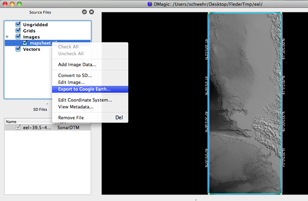
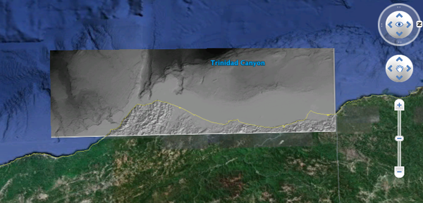
10.26.2009 11:33
Fall in the Sea Coast area
Fall peaked last week in the Sea
Coast area of NH. Here is view of the high point of Dover.
10.26.2009 11:23
Bootcamp on 10.6
I finally setup Boot Camp on my Mac
now that I have 10.6. It took me a long time because I was trying
to get it to let me do a triple boot with Linux, but if it doesn't
fit with what Apple was thinking, then it just doesn't work. I also
assumed that Fat32 would be okay, but it is not. You MUST use
NTFS.
Having a Time Machine backup that you can restore from is a real help with this process.
Make sure to format as NTFS. Don't just use the default that comes up.
I tried to make some extra partitions, but Bootcamp would have none of it and Windows got confused by the partitions. I have heard of triple booting, but it appears to be a lot easier with two or just ignore bootcamp and go it alone.
Having a Time Machine backup that you can restore from is a real help with this process.
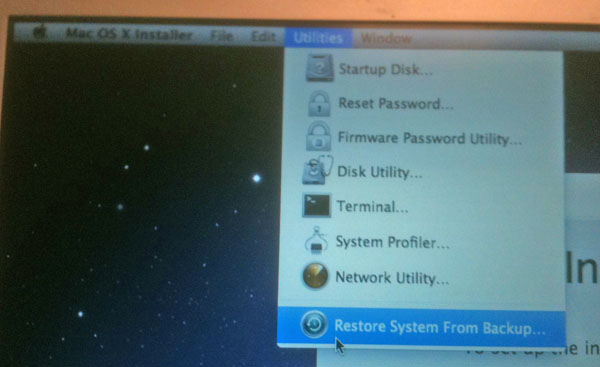
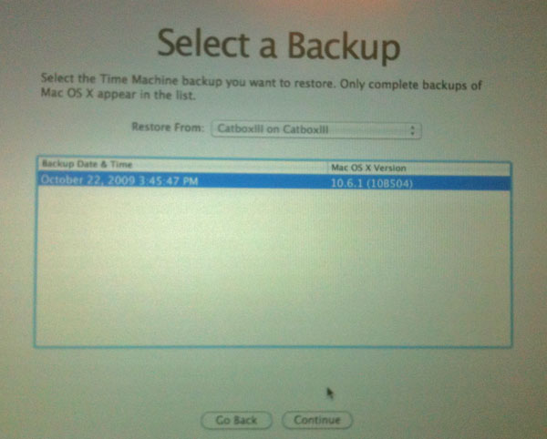
Make sure to format as NTFS. Don't just use the default that comes up.
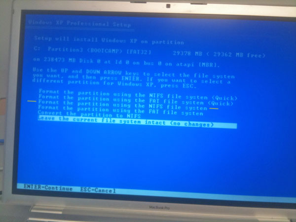
I tried to make some extra partitions, but Bootcamp would have none of it and Windows got confused by the partitions. I have heard of triple booting, but it appears to be a lot easier with two or just ignore bootcamp and go it alone.
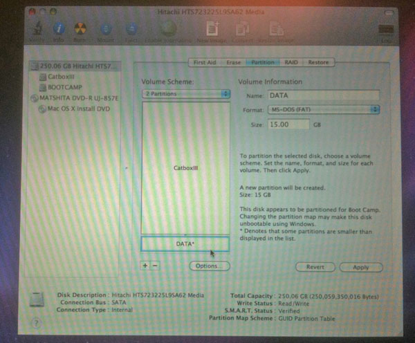
10.26.2009 10:14
Congressional Report on US Ice Breakers
RL34391:
Coast Guard Polar Icebreaker Modernization: Background, Issues, and
Options for Congress [OpenCRS]
Of the Coast Guard's three polar icebreakers, two--Polar Star and Polar Sea--have exceeded their intended 30-year service lives. The Polar Star is not operational and has been in caretaker status since July 1, 2006. A 2007 report from the National Research Council (NRC) on the U.S. polar icebreaking fleet states that "U.S. [polar] icebreaking capability is now at risk of being unable to support national interests in the north and the south." On July 16, 2008, Admiral Thad Allen, the Commandant of the Coast Guard, testified that: "Today, our nation is at a crossroads with Coast Guard domestic and international icebreaking capabilities. We have important decisions to make. And I believe we must address our icebreaking needs now.... " The Coast Guard is studying how many polar icebreakers, with what capabilities, should be procured as replacements for Polar Star and Polar Sea. Under the Coast Guard's current schedule, the first replacement polar icebreaker might enter service in 8 to 10 years, by which time Polar Star and Polar Sea could be about 40 years old. The Coast Guard estimated in February 2008 that new replacement ships might cost $800 million to $925 million each in 2008 dollars, and that the alternative of extending the service lives of Polar Sea and Polar Star for 25 years might cost about $400 million per ship. Potential policy issues for Congress regarding Coast Guard polar icebreaker modernization include the numbers and capabilities of polar icebreakers the Coast Guard will need in the future; whether to provide these icebreakers through construction of new ships or service life extensions of Polar Start and/or Polar Sea; whether to accelerate the Coast Guard's current schedule for acquiring replacement ships; whether new ships should be nuclear powered; whether new ships should be funded entirely in the Coast Guard budget, or partly or entirely in some other part of the federal budget, such as the Department of Defense (DOD) budget, the National Science Foundation (NSF) budget, or both; and whether, as an interim measure, the Polar Star should be repaired and placed back into service. The proposed FY2010 Department of Homeland Security (DHS) budget, which includes the proposed FY2010 Coast Guard budget, does not request any funding in the service's Acquisition, Construction, and Improvements (AC&I) account for polar icebreaker sustainment or acquisition of new polar icebreakers. The House Appropriations Committee, in its report (H.Rept. 111-157 of June 16, 2009) on the FY2010 DHS appropriations bill (H.R. 2892), does not recommend any funding in the AC&I account for polar icebreaker sustainment or acquisition of new polar icebreakers. The Senate Appropriations Committee, in its report (S.Rept. 111-31 of June 18, 2009) on the FY2010 DHS appropriations bill (S. 1298), recommends $32.5 million in the AC&I account for the reactivation and service life extension of Polar Star. Of this amount, $27.3 million is in an AC&I line item for polar icebreaker sustainment, and the remaining $5.2 million is included within a line item for AC&I direct personnel costs. Other legislation in the 111th Congress with provisions relating to polar icebreakers includes the Arctic Marine Shipping Assessment Implementation Act of 2009 (H.R. 2865) and the Coast Guard Authorization Act for Fiscal Years 2010 and 2011 (S. 1194).
10.25.2009 22:26
B-52's monitoring ships
Perhaps this is what they meant in
the GAO report when they refered to "National Technical
Means":
B-52 Used to Monitor Suspicious Ships Approaching the U.S. [National Defense Magazine]
B-52 Used to Monitor Suspicious Ships Approaching the U.S. [National Defense Magazine]
10.22.2009 18:23
Bad position values from AIS
UPDATE 03-Nov-2009: I was clipping
the last digit of the latitude by accident when parsing WKT
POINTS.
I am seeing ships with really ratty AIS position reports. Of course, this is from a ship with a MMSI of 0. Is this from a bad GPS or bit errors somewhere between the GPS and when it gets logged?
The ship moved 480m from the last postion report and not in the direction it was heading and then jumped back. All the other position reports are 40-50m apart. Not fun.
I am seeing ships with really ratty AIS position reports. Of course, this is from a ship with a MMSI of 0. Is this from a bad GPS or bit errors somewhere between the GPS and when it gets logged?
The ship moved 480m from the last postion report and not in the direction it was heading and then jumped back. All the other position reports are 40-50m apart. Not fun.
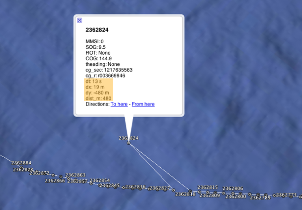
10.20.2009 08:58
Earth - Disk indexing
Earth (Ruby on Rails)
looks interesting as a possibility for the disk spider that I've
slowly started working on. Earth could provide the infrastucture
and database design. We would then need to bolt on the geospatial
component.
Perhaps the interface could embed the Google Earth Browser Plugin...
Earth allows you to find files across a large network of machines and track disk usage in real time. It consists of a daemon that indexes filesystems in real time and reports all the changes back to a central database. This can then be queried through a simple, yet powerful, web interface. Think of it like Spotlight or Beagle but operating system independent with a central database for multiple machines with a web application that allows novel ways of exploring your data.
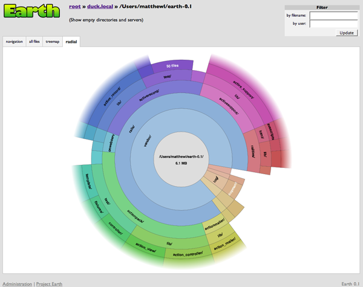
Perhaps the interface could embed the Google Earth Browser Plugin...
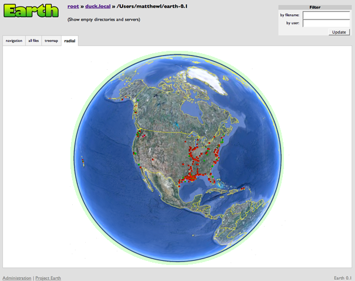
10.18.2009 18:54
Return of the review of the Spot Satellite Tracker
Trey put me in contact with Mark Micire who is a
roboticist that is pretty happy with his Spot experience one state
to the south of me. Mark agreed to let me quote some of his
comments to ballance my negative impression of the Spot service.
Also, I forgot to mention before that there is no battery indicator... scary. That and I was never able to get through to the company despite being on hold a number of times for a total of about an hour. The blinking lights make me feel like I'm debugging a computer from the 70s. The company really should have a youtube video tutorial of using this device to run through all the lights. There is stuff out there, but not linked in the manual... SPOT Satellite GPS Messenger Promo Hosts Brian Brawdy, Les Stroud
I think we will stick to Iridium phones, cell, wifi, and independent pingers when life or $ are on the line. Nothing like getting a nice text message from the Gavia telling us the location of where it hung up on some tree roots (eerrr... forgot to digitize a couple of the islands in the lake).
Mark has made himself some really cool mounts for the device. If you are goint to use one of these devices, it sounds like a good mount is critical. Check out his elegant design:
Yeah. I mostly disagree with Kurt on the features he would like to see. All of the LCD and bluetooth stuff would just be an additional battery drain. The whole idea is to maximize the battery life. I have had batteries in this thing for 6+ months and still get great performance. This is someone who wants a Garmin with satellite upload capability, not a Spot. As for the reception, it really depends on which direction he was traveling and if he placed it face up or face down on his dash. Given that he didn't understand the lights (they do tell you when it is transmitting to the satellites), I can't imagine that he understood how the antenna was positioned in the shell. This is why I made the windshield mount for my spot. Cars are particularly problematic because (as the manual says) the spot needs line of sight to the southern sky. Unlike a GPS, it does not have a constellation of 10+ satellites hovering above. You are hitting a single point somewhere over the equator. So, if you are driving north and you put the spot face down on the dash, it might have a GPS signal, but that doesn't mean that it will get an update to the satellite. (Remember, this thing is talking to a satellite and uses only two AA batteries.)I tried the device again today while we were out in the mountains. Pointed it somewhat to the south (how about a little help like the claymore mine: "front towards enemy"). Left it on the dash face up too. Nothing came through today from several hours of the device being on and two okay attempts.
Also, I forgot to mention before that there is no battery indicator... scary. That and I was never able to get through to the company despite being on hold a number of times for a total of about an hour. The blinking lights make me feel like I'm debugging a computer from the 70s. The company really should have a youtube video tutorial of using this device to run through all the lights. There is stuff out there, but not linked in the manual... SPOT Satellite GPS Messenger Promo Hosts Brian Brawdy, Les Stroud
I think we will stick to Iridium phones, cell, wifi, and independent pingers when life or $ are on the line. Nothing like getting a nice text message from the Gavia telling us the location of where it hung up on some tree roots (eerrr... forgot to digitize a couple of the islands in the lake).
Mark has made himself some really cool mounts for the device. If you are goint to use one of these devices, it sounds like a good mount is critical. Check out his elegant design:
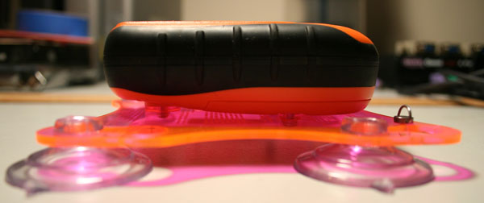
10.18.2009 08:40
Validating NGDC metadata submission
I've been trying to figure out how to
validate XML metadata easily. Here is what the top of the metadata
file looks like:
<?xml version="1.0" encoding="UTF-8"?>
<metadata xmlns:xsi="http://www.w3.org/2001/XMLSchema-instance" xsi:noNamespaceSchemaLocation="http://ngdc.noaa.gov/metadata/published/xsd/ngdcSchema/schema.xsd">
<idinfo>
<citation>
<citeinfo>
<origin>
UNH/CCOM-JHC : Center for Coastal and Ocean Mapping/Joint Hydrographic Center, University of New Hampshire
</origin>
<pubdate>
2009-10-30
</pubdate>
I tried running this to see if xmllint would handle the XSD schema:
xmllint --noout multibeam_line0001_metadata.xmlIf runs and return 0 if you run "echo $?" to see what exit code it gave. xmllint requires that you tell it the name of the schema file. So I tried this:
xmllint --noout --schema http://ngdc.noaa.gov/metadata/published/xsd/ngdcSchema/schema.xsd multibeam_line0001_metadata.xmlUnfortunately, the results do not look so good:
multibeam_line0001_metadata.xml:4: element citation: Schemas validity error : Element 'citation': This element is not expected. Expected is ( datsetid ).
multibeam_line0001_metadata.xml:231: element procdate: Schemas validity error : Element 'procdate': '
2009-10-14
' is not a valid value of the union type 'procdateType'.
multibeam_line0001_metadata.xml:293: element geogunit: Schemas validity error : Element 'geogunit': [facet 'enumeration'] The value 'Decimal Degrees' is not an element of the set {'Decimal degrees', 'Decimal minutes', 'Decimal seconds', 'Degrees and decimal minutes', 'Degrees, minutes, and decimal seconds', 'Radians', 'Grads'}.
multibeam_line0001_metadata.xml:293: element geogunit: Schemas validity error : Element 'geogunit': 'Decimal Degrees' is not a valid value of the atomic type 'geogunitType'.
multibeam_line0001_metadata.xml:417: element metd: Schemas validity error : Element 'metd': [facet 'pattern'] The value '2009-10-15' is not accepted by the pattern 'cd\d{5,}'.
multibeam_line0001_metadata.xml:417: element metd: Schemas validity error : Element 'metd': '2009-10-15' is not a valid value of the atomic type 'metdType'.
multibeam_line0001_metadata.xml:473: element mettc: Schemas validity error : Element 'mettc': [facet 'enumeration'] The value 'Universal Time' is not an element of the set {'local time', 'local time with time differential factor', 'universal time'}.
multibeam_line0001_metadata.xml:473: element mettc: Schemas validity error : Element 'mettc': 'Universal Time' is not a valid value of the atomic type 'mettcType'.
multibeam_line0001_metadata.xml fails to validate
Update 2009-Oct-19: Briana informed me that the above
complaints from xmllint are currently expected. They come from the
migration from FGDC metadata towards ISO metadata.10.16.2009 17:03
iftop for monitoring network traffic
We are doing an rsync of a dataset across our
Internet2 connection and I wanted to check out how fast it is
going, but I'm not the one who initiated the connection. All I can
see on my server is through ps:
On Ubuntu: "sudo apt-get install iftop"
rsync --server --sender -vlWogDtpr . datasetJordon suggested I try iftop. Works great to see what is happening! We are getting 5Mbit/sec sustained to Colorado. Should take about 8 hours to transfer the 18GB dataset at these speeds and hopefully, the speed will increase later in the evening.
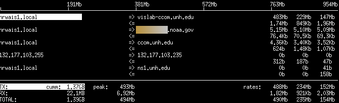
On Ubuntu: "sudo apt-get install iftop"
10.16.2009 10:07
qgis is fink
BABA Yoshihiko has been putting some
serious work into improving grass and adding a QT Mac version of
QGis into fink. This is exciting stuff. Having a fully working
system like this in fink will be a huge leg up. I love X11, but
Apple has not integrated it well with Mac OSX. Please join in the
testing:
grass64, qgis-mac-1.0.3 and their dependecy packages
So far, I've managed to build the qgis-mac:
grass64, qgis-mac-1.0.3 and their dependecy packages
So far, I've managed to build the qgis-mac:
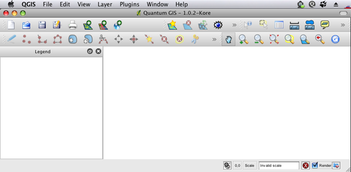
10.15.2009 17:42
Using the wiki to present the wiki
I had one of those moments last week.
I was updating my presentation on how to use our internal wiki here
at CCOM. First, I fired up Power Point and started looking at
what's new in the wiki since I last did this kind of training...
"Um, why am I using PowerPoint?" Duh! Use the wiki to present the
wiki. I created a page and just made links to each page that I
wanted to visit as I guided people through the wiki.
More better. Special pages do what they are supposed to and update on the fly. Only trouble is saving an example search URL for a term that is not in the wiki doesn't work as once I saved the tour with that URL, the term is now in the wiki. Should have used tinyurl to mask the search. I've done that after the class and now the example works right.
More better. Special pages do what they are supposed to and update on the fly. Only trouble is saving an example search URL for a term that is not in the wiki doesn't work as once I saved the tour with that URL, the term is now in the wiki. Should have used tinyurl to mask the search. I've done that after the class and now the example works right.
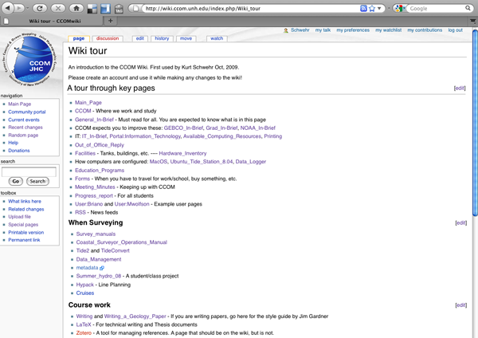
10.15.2009 16:52
Clarification on AIS Zone messages (old style)
Here is some notes that will
hopefully help with decoding the older (not the proposed IMO
standard) zone messages. This is what is currently being broadcast
from the north end of Cape Cod. I modified my zonemsg_decode script
to take a Unix UTC timestamp and use that to calculate how long the
zone has until it expires. Here are two examples from two days ago.
This illustrates that currently the zones that have no whales are
set to expire after just a few minutes (here 10). If part of the
AIS system goes offline, then after no more than 10 minutes all the
zones on peoples chart displays that appeared as no whales observed
will disappear.
Note that all times in the AIS messages must be UTC. Local time displays should only be done as a presentation issue.
If a time remaining goes negative (aka the message expired), you should stop displaying the message on the chart view.
First with no whales heard by the autobuoy for the last 24 hours:
Note that all times in the AIS messages must be UTC. Local time displays should only be done as a presentation issue.
If a time remaining goes negative (aka the message expired), you should stop displaying the message on the chart view.
First with no whales heard by the autobuoy for the last 24 hours:
!AIVDM,1,1,,A,803OvriK`PP6l`0Fg7GI63do4T;0,0*63,d-089,S0359,t204009.00,T09.57700285,r003669945,1255466410,cornell,1255466411.7This message decodes like this:
{'DAC': 366, 'RepeatIndicator': 0, 'UserID': 3669739, 'Spare': 0, 'MessageID': 8, 'FI': 34}
ZoneMsg
dac: 366
fi: 34
zone_id: 1
zone_type: 0 [Right Whales NOT OBSERVED]
start_utc_day: 13
start_utc_hour: 20
start_utc_minute: 40
zone_duration_minutes: 10
num zones: 1
ZoneCircular 9260m radius at (-70.67832, 42.34728)
ZoneCircular
radius: 9260m
longitude: -70.6783166667
latitude: 42.3472816667
Now: 2009-10-13 20:40:11
Start time: 2009-10-13 20:40:00
Expires: 2009-10-13 20:50:00
Remaining: 589 sec
Remaining: 9.82 min
Remaining: 0.16 hr
And now for the case where a whale was heard by the hydrophone:
!AIVDM,1,1,,B,803OvriK`R0FaqT6gOv763PKLT;0,0*25,d-089,S0392,t204010.00,T10.45701635,r003669945,1255466410,cornell,1255466411.9This decodes to:
{'DAC': 366, 'RepeatIndicator': 0, 'UserID': 3669739, 'Spare': 0, 'MessageID': 8, 'FI': 34}
ZoneMsg
dac: 366
fi: 34
zone_id: 4
zone_type: 1 [Right Whales PRESENT]
start_utc_day: 13
start_utc_hour: 9
start_utc_minute: 57
zone_duration_minutes: 1440
num zones: 1
ZoneCircular 9260m radius at (-70.34238, 42.32606)
ZoneCircular
radius: 9260m
longitude: -70.3423766667
latitude: 42.326065
Now: 2009-10-13 20:40:11
Start time: 2009-10-13 09:57:00
Expires: 2009-10-14 09:57:00
Remaining: 47809 sec
Remaining: 796.82 min
Remaining: 13.28 hr
10.15.2009 09:52
Python GIS courses on the web (not ArcGIS)
Geoprocessing with
Python using Open Source GIS
WILD 6900 Special Topics Section 3 (1 credit) Spring 2009 Week 1: Reading and writing vector data with OGR Week 2: Creating geometries and handling projections Week 3: Filters & analysis; Function & modules Week 4: Reading raster data with GDAL Week 5: Map algebra and writing raster data Week 6: More raster processing Week 7: Misc stuff Solution for homework 7Found from Sean's nice writeup of a point class: Python and GIS 101
10.14.2009 14:15
Review of SPOT tracking service
I've now had a SPOT tracking device
for a few weeks and it is time to review the device. (For the
FTC...) I received a free SPOT device and year of service from
gCaptain. I was excited to take
the device to sea with me on Langseth. That cruise was for not, but
I've now tried the device on-shore on both coasts of the United
States.
The first thing about the service is device interface. The size of the handheld unit is nice. If fits in my hand and I can throw it in cargo pants pockets or clip it on my belt. The 911 button is recessed so that it is hard to accidentally press. That's the good. The interface completely fails on the user interface front. There are two blinking lights on the front that are supposed to tell you the state of the device. A device that is supposed to save your life should be simple. Looking at blinking lights to see if there is a GPS lock is confusing. The device despirately needs an LCD display to say the state it is in, when it last transmitted the position, and GPS signal strength.
In terms of the actual service, I have to conclude that I would not want to trust my life to this device. Most recently, I put the device on the dashboard of my car for an hour drive from UNH down to Cape Ann. I drove an hour south, drove west 25 minutes to another site in Salem and drove back north to UNH for another hour. During that time, the service recorded only 4 position report in Gloucester. That's it! In Astoria, OR, I walked around town for several hours without a single position report getting through.
Beyond the normal tracking mode, there are three modes to also communicate location: I tried the OK mode about 20 times through all my testing and got one email from SPOT.
If this device has this much trouble and confusion in normal conditions, I am not going to count on this device when things are bad. It can't hurt to take this thing along, but I'm not going to count on it. It's a great idea, but could use improvement:
The first thing about the service is device interface. The size of the handheld unit is nice. If fits in my hand and I can throw it in cargo pants pockets or clip it on my belt. The 911 button is recessed so that it is hard to accidentally press. That's the good. The interface completely fails on the user interface front. There are two blinking lights on the front that are supposed to tell you the state of the device. A device that is supposed to save your life should be simple. Looking at blinking lights to see if there is a GPS lock is confusing. The device despirately needs an LCD display to say the state it is in, when it last transmitted the position, and GPS signal strength.
In terms of the actual service, I have to conclude that I would not want to trust my life to this device. Most recently, I put the device on the dashboard of my car for an hour drive from UNH down to Cape Ann. I drove an hour south, drove west 25 minutes to another site in Salem and drove back north to UNH for another hour. During that time, the service recorded only 4 position report in Gloucester. That's it! In Astoria, OR, I walked around town for several hours without a single position report getting through.
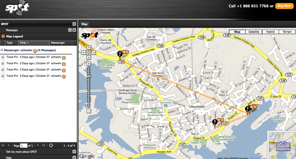
Beyond the normal tracking mode, there are three modes to also communicate location: I tried the OK mode about 20 times through all my testing and got one email from SPOT.
schwehr Latitude:43.15815 Longitude:-70.93303 GPS location Date/Time:09/30/2009 09:14:09 EDT Click the link below to see where I am located. http://maps.google.com/maps?f=q&hl=en&geocode=&q=43.15815,-70.93303&ll=43.15815,-70.93303&ie=UTF8&z=12&om=1 Message:SPOT Check-in - KurtI tried the "Help" button a bunch of times and the mode lights changed, but after leaving it out in the open for a while, I never got an email.
If this device has this much trouble and confusion in normal conditions, I am not going to count on this device when things are bad. It can't hurt to take this thing along, but I'm not going to count on it. It's a great idea, but could use improvement:
- A better user interface with an LCD
- Some indication of if the SPOT uplink satellite is available
- An indication when the last position report went out
- Options for additional network types to get out reports would be good... e.g. wifi, cellular, bluetooth, amateur radio
- Why can't this thing also act as a normal bluetooth GPS?
10.14.2009 12:00
Apple not testing hardware before returning apple care repaired computers
In general, I have been happy with
Apple Care support for my Macs. I call the 800 number, get an
overnight mailer the next day, and get the hardware back in a
couple days. At this point, my MacBook Pro circa 2007 is pretty
much an entirely new machine except for the outer shell. However,
this time, I decided to try the Hardware Tests before doing
anything more with this machine. It was definitely a lemon since
day 1. I put in the original OS disk that originally came
with the computer, and shutdown the machine. I then powered on the
laptop while holding down the 'd' key. This boot into the "Apple
Hardware Test". I selected the default test (not the extended
test). Three minutes later I had an error result: "4SNS/1/40000000:
TG0D" (or TGOD?). Dear Apple, please use a font that puts a slash
through zeros! This apparently means that one of the temperature
sensors is not properly hooked up on the motherboard (aka
logicboard). It would have been nice for Apple to run this test
before sending me the laptop back.
For the extended test, it gave the same error. The run time turned out to be 1 hour 36 minutes on a 2.4GHz Core2Duo with 4GB of 667MHz RAM.
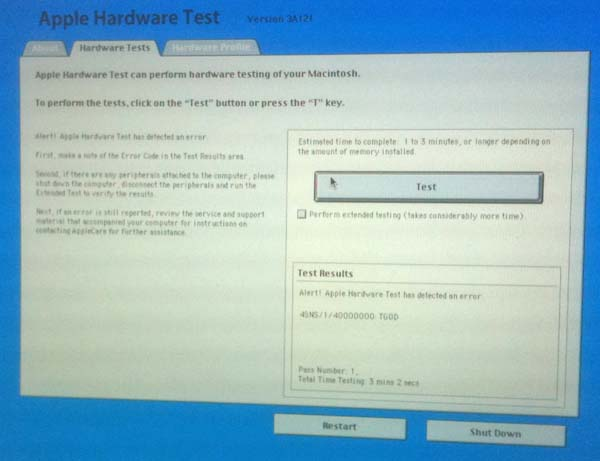
For the extended test, it gave the same error. The run time turned out to be 1 hour 36 minutes on a 2.4GHz Core2Duo with 4GB of 667MHz RAM.
10.11.2009 08:02
ObjC properties with C types
Thanks to Loic for pointing out that
C types can definitely be used in ObjC properties. Copy is for
objects. See the @property and @synthesize lines.
#import <Foundation/NSObject.h>
#import <stdio.h>
@interface Fraction: NSObject {
int numerator;
int denominator;
}
-(void) print;
@property(readwrite,assign) int numerator, denominator;
@end
@implementation Fraction
@synthesize numerator, denominator;
-(void) print { printf("%i/%i", numerator, denominator); }
@end
int main(int argc, const char *argv[]) {
Fraction *frac = [[Fraction alloc] init];
[frac setNumerator: 1];
[frac setDenominator: 3];
printf("The fraction is: ");
[frac print];
printf("\n");
[frac release];
return 0;
}
10.10.2009 14:53
Objective-C kickstart
I always like to have simple examples
and a Makefile to get things going. Until I'm familiar with what is
going on behind the scenes, I am uncomfortable with IDE's that hide
all the details. I started reading the O'Reilly iPhone SDK book, and
wanted to try out the examples in Chapter 1, the ObjC kick start.
Didn't turn out like the book implies. Here is my take on Zdziarski's Fraction program. This
compiles for me on Mac OSX 10.5 with GCC 4.0.1: frac.m
For more on properties in ObjC, see: Objective-C: Properties, Setters and Dot Syntax
#import <Foundation/NSObject.h>
#import <stdio.h>
@interface Fraction: NSObject {
int numerator;
int denominator;
}
-(void) print;
-(void) setNumerator: (int) n;
-(void) setDenominator: (int) d;
-(int) numerator;
-(int) denominator;
@end
@implementation Fraction
-(void) print { printf("%i/%i", numerator, denominator); }
-(void) setNumerator: (int) n { numerator = n; }
-(void) setDenominator: (int) d { denominator = d; }
-(int) denominator { return denominator; }
-(int) numerator { return numerator; }
@end
int main(int argc, const char *argv[]) {
Fraction *frac = [[Fraction alloc] init];
[frac setNumerator: 1];
[frac setDenominator: 3];
printf( "The fraction is: ");
[frac print];
printf("\n");
[frac release];
return 0;
}
To build the code, we need the Foundation framwork for the NSObject
type. Because the example is so simple, we don't need a makefile.
Make will notice the .m ObjC file (no, this is not MatLab) and will
realize that it can use it to build the "frac" program.
make LDFLAGS='-framework Foundation' fracI then tried to use the Properties feature to simplify the above code, but I kept getting errors trying to do @property(copy) on an int. I could easily be wrong, but I believe that properties do not work on simple C types. I tried a property on a NSString and it compiled fine.
For more on properties in ObjC, see: Objective-C: Properties, Setters and Dot Syntax
10.10.2009 10:52
Django 1.1.1 - Security release
release 1.1.1 covers a denial of
service issue... Oct 09
Security announcement
Django's forms library included field types which perform regular-expression-based validation of email addresses and URLs. Certain addresses/URLs could trigger a pathological performance case in this regular expression, resulting in the server process/thread becoming unresponsive, and consuming excessive CPU over an extended period of time. If deliberately triggered, this could result in an effective denial-of-service attack.I have updated fink unstable to 1.1.1. If you are using django from fink, I strongly suggest that you use the unstable version. Stable is still pre 1.0.
10.10.2009 10:30
Edmands Path, Eisenhower, White Mountains
Yesterday, I gave Edmands
Path a try. The path heads up towards Mount
Eisenhower. The saddle at the top of the train is at 1322m and
is 3.68 km as the crow flies from the parking lot (which starts you
off at 656m). I didn't try either of the peaks as the weather was
turning. It's a pretty rocky trail. Hiking boots recommended!
The fall colors are peaking on the north side of the mountains. Next weekend is probably going to be the peak for the Kancamangus Highway, which is just south of Route 302.
The fall colors are peaking on the north side of the mountains. Next weekend is probably going to be the peak for the Kancamangus Highway, which is just south of Route 302.
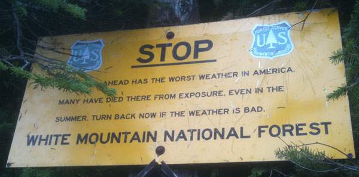
10.06.2009 16:39
Mediawiki copied and with images
Just got the full wiki clone thing
going...
fink install mediawiki sudo a2ensite mediawiki mysqldump --host wikihost.ccom.nh --password=###### --user=wikiuser --complete-insert wikidb > ccom-wiki.sql mysqladmin -u root -p create wikidb; mysql -u root -p mysql> CREATE USER wikiuser IDENTIFIED BY 'pass1'; mysql> GRANT ALL PRIVILEGES ON wikidb.* TO 'wikiuser'@'localhost' WITH GRANT OPTION; mysql -u root -p wikidb < ~/Desktop/ccom-wiki-complete.sql open http://localhost/mediawiki/Then:
rsync wikihost.ccom.nh:/var/www/html/images /sw/var/mediawiki/images
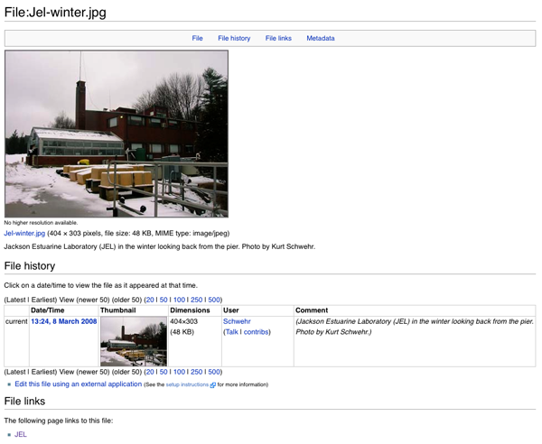
10.06.2009 07:21
TJ and Shep in the local paper
Technology shows local ocean maps outdated [seacoastonline]
Credit: Photo by Colleen Mitchell.
Cmdr. Shepard Smith, aboard National Oceanic and Atmospheric Administration ship Thomas Jefferson, explains a graphic of the newly mapped ocean floor northeast of the York Ledges. ...
Credit: Photo by Colleen Mitchell.
10.06.2009 07:07
Cloning a mediawiki to a Mac for going to Sea
Brian C. and I have been thinking
about how to most effectively take our internal mediawiki based wiki to sea. Since we
both use Macs, I've defaulted to starting with creating a fink
package for mediawiki. Assuming that this will be a local only wiki
server (probably on a laptop), I am not going to be too concerned
with security.
mediawiki.info
mediawiki.info
sudo mysqld_safe --user=mysql & mysqladmin -u root password PASSWDHERE mysql -u root -p mysql enter passwd mysqladmin -u root -p create wikidb; GRANT ALL PRIVILEGES ON wikidb.* TO 'wikiuser'@'localhost' WITH GRANT OPTION; sudo a2ensite mediawiki sudo apache2ctl restart open http://localhost/mediawikiThe info package creates a /sw/etc/apache2/sites-available/mediawiki file allowing you to a2ensite/a2dissite to turn on and off the wiki. Next will come working on injecting a mysql dump of the wiki rather than configure it through the webpage. I will also need to create a custom /sw/var/mediawiki/LocalSettings.php file to talk to that database.
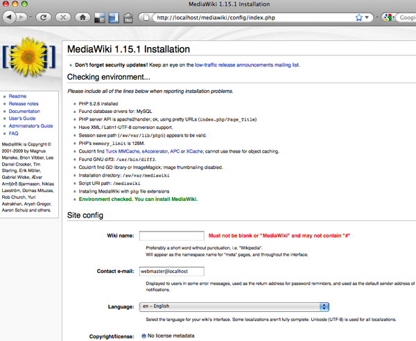
10.05.2009 17:42
Customizing Aldebaran II
With the help of Shawn F., I have
been customizing Aldebaran II. Turns out that Aldebaran II is
pretty customizable. Here is the view I ended up with today:
When I end up with my final view, I will try to detail all that goes into creating the display.
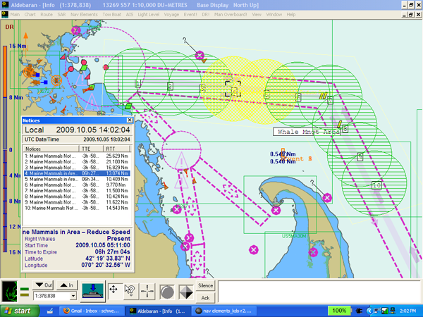
When I end up with my final view, I will try to detail all that goes into creating the display.
10.03.2009 11:30
New fiber run at CCOM
CCOM just got a new fiber run from
the new server room out to the edge of the building.
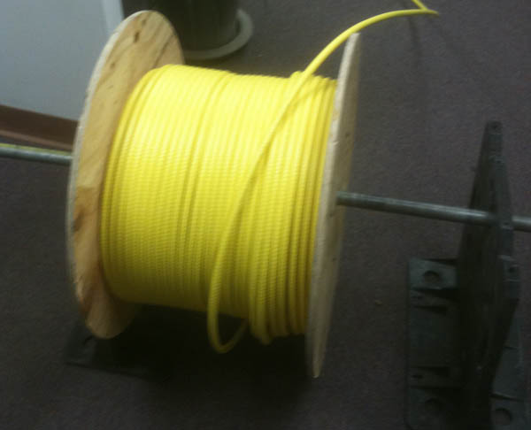
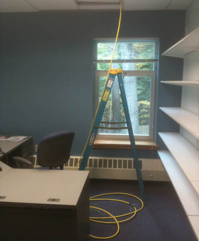
10.03.2009 11:28
Thomas Jefferson in Portsmouth, NH
At the pier in New Hampshire. The CO
was kind enough to allow about 45 of us to come tour the
ship.
The multibeam and GPS systems with Andy Armstrong looking on.
The surveying station right behind the bridge.
The multibeam and GPS systems with Andy Armstrong looking on.
The surveying station right behind the bridge.
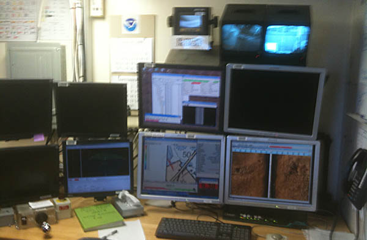
10.02.2009 09:32
NOAA ship Thomas Jefferson in NH
The TJ is heading in to Portsmouth
today... Yesterday, she did some serious lawn mowing just off the
coast of Kittery, ME.
tj.kmz
tj.kmz
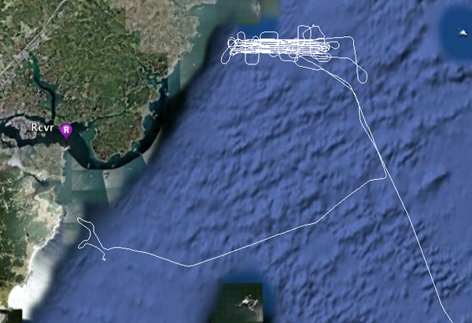
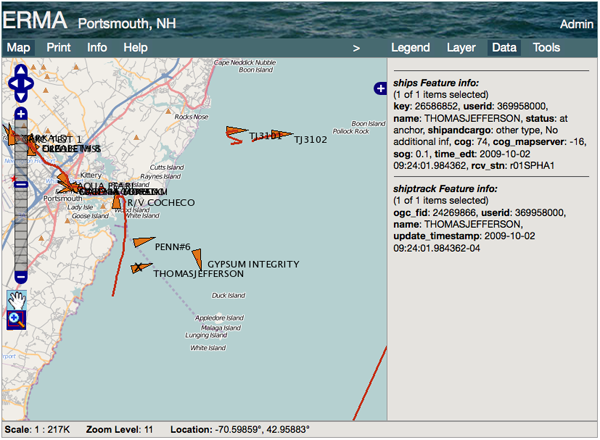
10.01.2009 20:58
proj in fink
I've updated proj to 4.7.0 in fink. With this
update, the change notice says that projection EPSG:3857 is now in
place for the Google Merc. As a result, I'm dropping the patch for
Google as 900913. If you still need it, just uncomment these two
lines in /sw/fink/10.4/unstable/main/finkinfo/sci/proj.info:
It's weird to see myself as 8th in terms of individuals who maintain fink packages (with 89): Statistics for September 2009
#echo "# Google Mercator projection" >> nad/epsg #echo "<900913> +proj=merc +a=6378137 +b=6378137 +lat_ts=0.0 +lon_0=0.0 +x_0=0.0 +y_0=0 +k=1.0 +units=m +nadgrids=@null +no_defs" >> nad/epsgNew PROJ 4.7.0 library available
It's weird to see myself as 8th in terms of individuals who maintain fink packages (with 89): Statistics for September 2009
10.01.2009 13:53
North Polar Stereographic projection
This took a little while to sort out.
I want to be able to use proj to convert to and from the Healy Law
of the Sea multibeam data. That far north, geographic (EPSG:4326) is
terrible. They use a North Polar Stereographic project that is
centered on -160 degrees longitude with a latitude of true scale of
75N. Thankfully, I have some information to help me out. First,
Brian C. has created files for each line that have the data in
geographic, the usual 0 centered north stereographic, and the 160W
centered version used for the Healy data.
% head -2 *.txt ==> 2009_241_depth.txt <== -117.1741715 83.8010313 -606038.940 311116.433 2704.500 -117.1904645 83.8008067 -605972.446 311300.061 2709.800 ==> 2009_241_depth_ps000E.txt <== -606038.946 311116.436 -2704.500 -605972.446 311300.060 -2709.800 ==> 2009_241_depth_ps160W.txt <== 463082.238 -499631.346 -2704.500 462956.945 -499781.152 -2709.800Plus Larry had this in his Fledermaus projection list that he created. And it is fantastic that Fledermaus is using proj!
PROJCS["FPC_WGS_84_PS__75_160_HEALY", GEOGCS["FG_WGS_84", DATUM["FD_WGS_1984", SPHEROID["WGS 84",6378137,298.257223563,AUTHORITY["EPSG","7030"]],AUTHORITY["EPSG","6326"]], PRIMEM["Greenwich",0,AUTHORITY["EPSG","8901"]], UNIT["degree",0.01745329251994328,AUTHORITY["EPSG","9122"]],AUTHORITY["EPSG","4326"]], UNIT["meter",1,AUTHORITY["EPSG","9001"]], PROJECTION["Polar_Stereographic"], PARAMETER["latitude_of_origin",75], PARAMETER["central_meridian",-160], PARAMETER["scale_factor",1.0], PARAMETER["false_easting",000000], PARAMETER["false_northing",000000], AUTHORITY["EPSG","32661"], AXIS["Easting", UNKNOWN], AXIS["Northing", UNKNOWN]]Using the above information and looking at EPSG:32661, I was able to figure out first the line for north polar stereographic:
echo "-117.1741715 83.8010313" | proj +proj=stere +lat_0=90 +lat_ts=90 +lon_0=0 +k=0.994 +x_0=0 +y_0=0 +ellps=WGS84 +datum=WGS84 +units=m +no_defs -612841.39 314608.54And for the Healy data (lat_ts == Latitude of True Scale):
echo "-117.1741715 83.8010313" | proj +proj=stere +lat_0=90 +lat_ts=75 +lon_0=-160 +k=0.994 +x_0=0 +y_0=0 +ellps=WGS84 +datum=WGS84 +units=m +no_defs 463082.24 -499631.35Now I can use invproj to pull data from the project back to geographic.
10.01.2009 08:06
Langseth multibeam and subbottom
The Knudsen subbottom chirp system on
the Langseth. These photos illustrate how I should have pulled out
the point and shoot rather than just stick with the iPhone 3GS. All
instruments are off in these photos, so the screen images are not
very interesting.
The Kongsberg EM122...
And the transducer pod is under the ship, so hopefully someone will send me images when the ship is up out of the water in dry dock this winter.
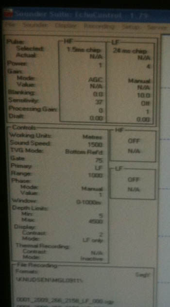
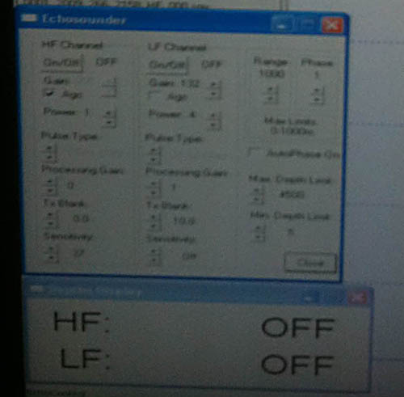
The Kongsberg EM122...
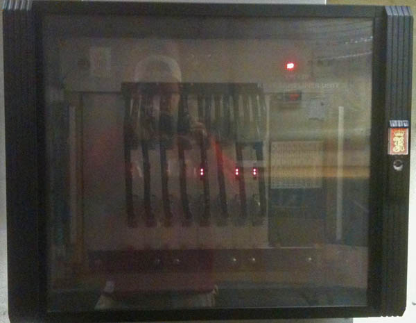
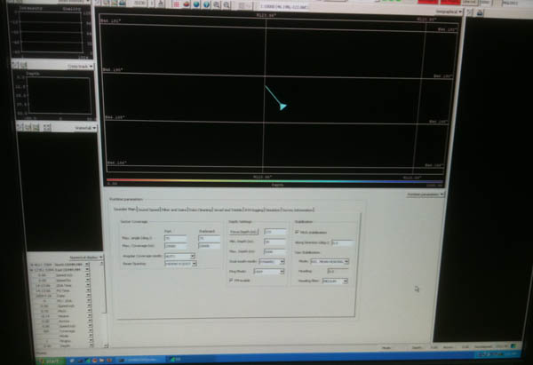
And the transducer pod is under the ship, so hopefully someone will send me images when the ship is up out of the water in dry dock this winter.
10.01.2009 07:44
elog on the Langseth
Too bad I didn't grab a screen shot
where I could show normal ship operations, but here is a quick view
of the eLog system on the ship. After Val's experience with elog on
the Healy, I gave it a try. A very useable system. Not overly
flexible, but it just works.
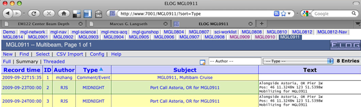